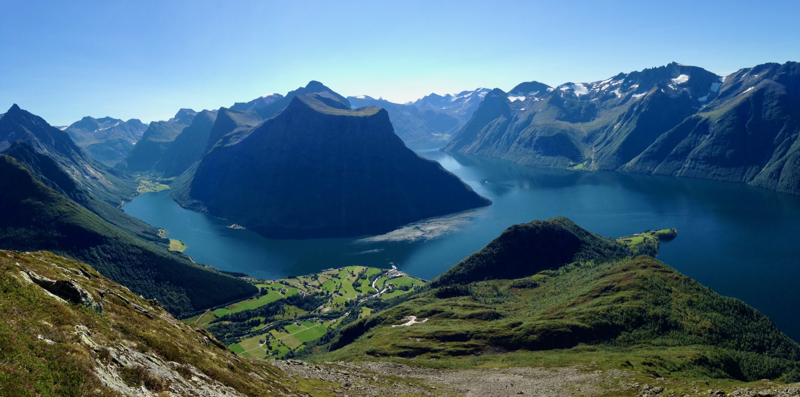

Rapport · oktober 2026
Are Halland, Kjernekaren
Funn 2 av 5
Ni av fjorten sa at dei ringde for å få stadfesta noko dei alt hadde lese på nettsida.
Metode
“
Eg les det på nettet, og så ringjer eg likevel. Berre for å vere sikker på at det gjeld meg.
Tilrådingar
Neste steg
| Kva | Kven | Når |
|---|---|---|
| Gå gjennom tilrådingane i styringsgruppa | Prosjektleiar | November 2026 |
| Prioritere dei ti viktigaste sidene | Innhaldsteamet | Desember 2026 |
| Kjerneverkstad for dei tre første sidene | Kjernekaren og teamet | Januar 2027 |